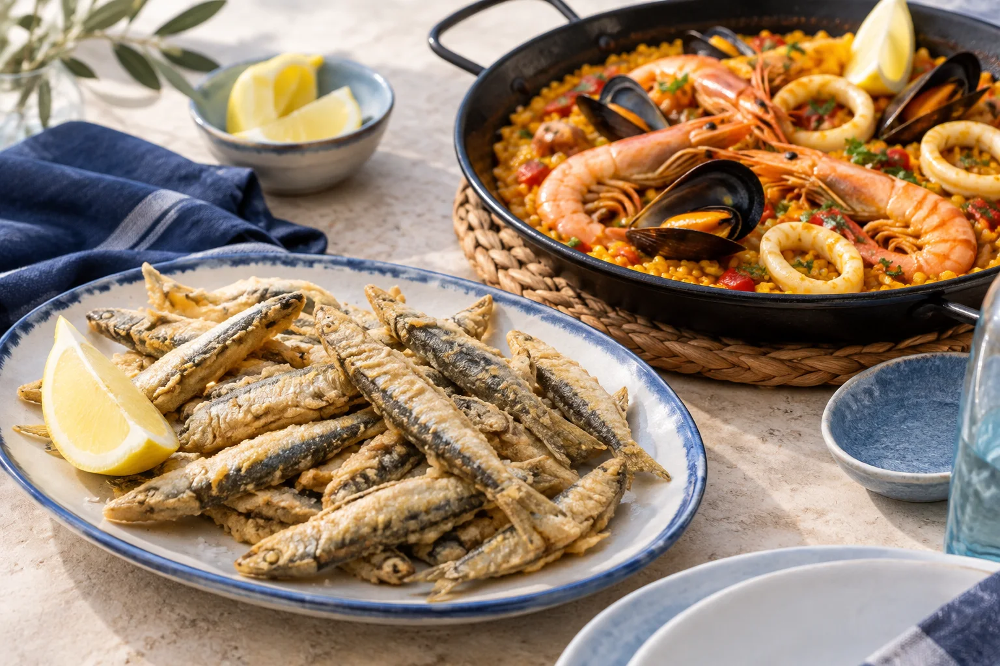
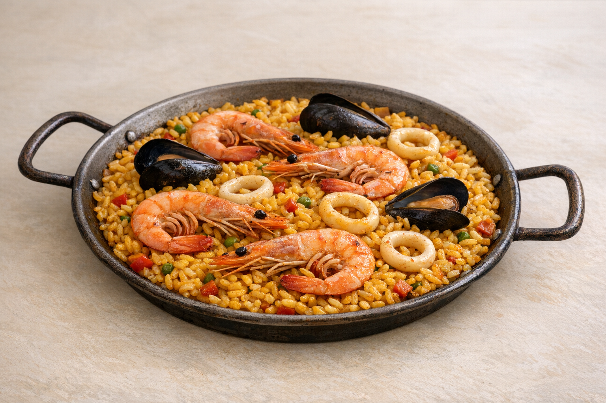

01
Raciones de pescaíto y marisco
Conchas finas
12.00 €Mejillones
10.50 €Choco plancha
10.50 €Gambas cocidas
10.50 €Sardinas
9.90 €Ensalada de pimientos
9.90 €Salpicón de marisco
10.90 €Ensaladilla rusa
9.90 €Gambas al pil-pil
10.90 €Lubina a la rondeña
19.90 €Rosada plancha
14.90 €Chanquetes (pez plata)
9.90 €Boquerones fritos
9.90 €Boquerones en vinagre
10.90 €Boquerones al limón
11.90 €Ali-Oli
10.90 €Calamares
9.90 €Calamaritos
9.90 €Tortilla de camarón
9.90 €Fritura de la huerta
9.90 €Berenjenas con miel
9.90 €Bolitas de bacalao
9.90 €Adobo
9.90 €Bacalao frito
9.90 €
02
Arroces
Precio por persona. Mínimo 2 personas.
Paella de mariscos
17.50 €Arroz caldoso
17.50 €